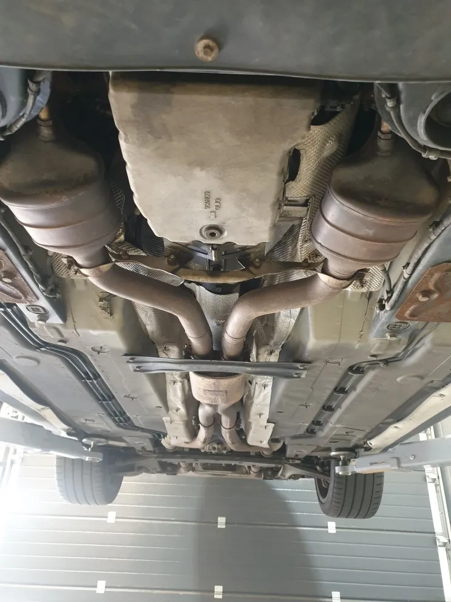
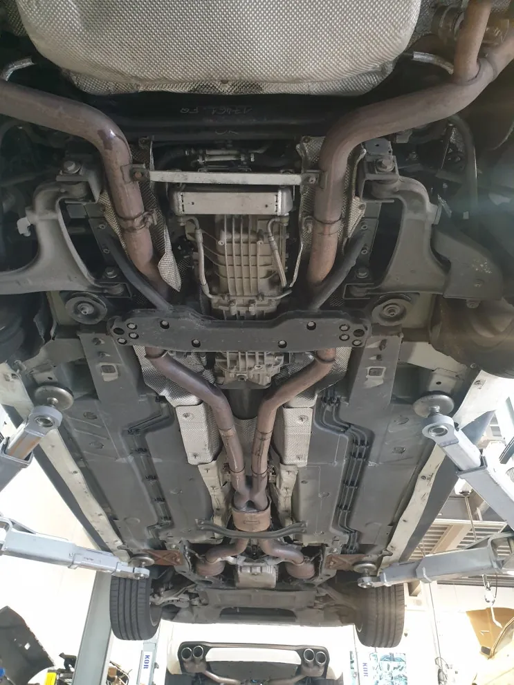
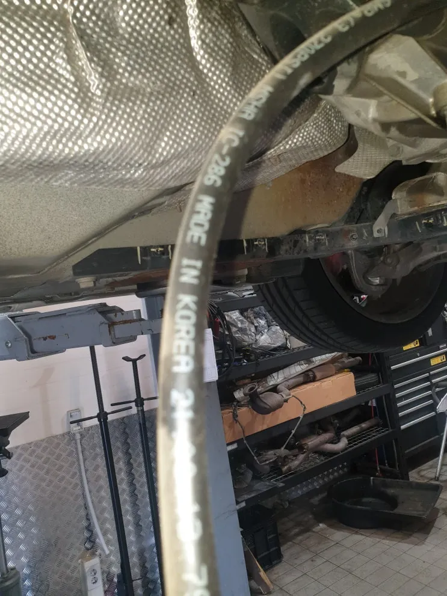
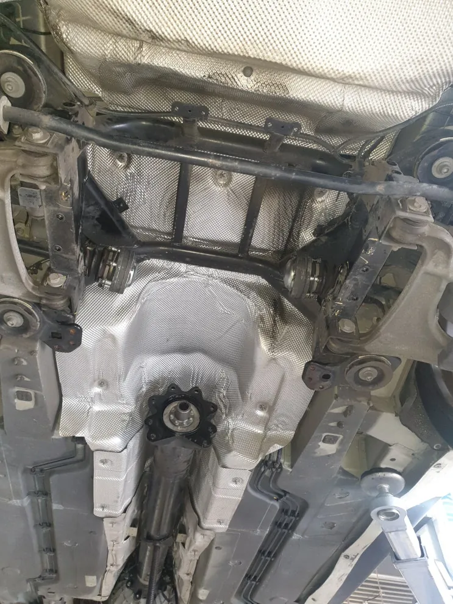
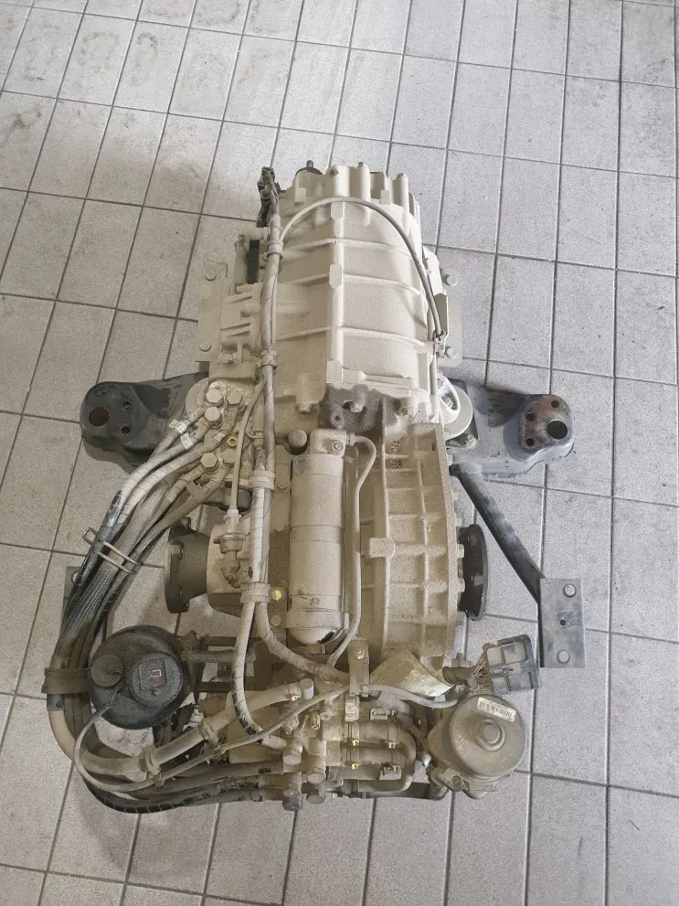
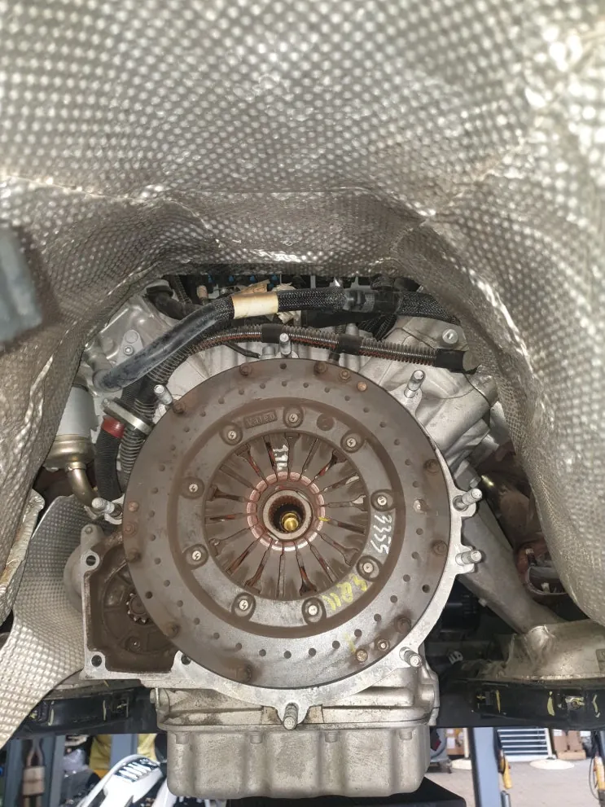
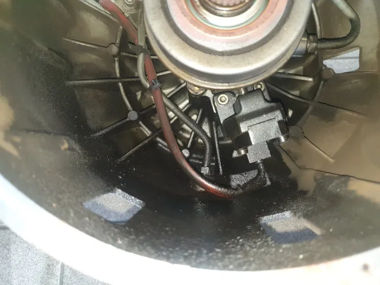

그란투리스모 F1미션 경고등·2단 변속 제한 — F1 클러치 세트 교환
At a glance한눈에 보기
- 차량
- 마세라티 그란투리스모
- 증상
- F1미션 경고등 간헐 점등, 경고등 점등 시 2단까지만 변속, 시동 꺼짐은 없음
- 진단
- 그란투리스모의 간헐적 F1미션 경고등과 2단 변속 제한은 F1 클러치 문제였습니다. 경고등이 다시 켜진 상태로 재입고해 진단기로 원인을 확인했고, 미션을 내려 클러치 세트와 스러스트 베어링, F1 릴레이를 교환했습니다.
- 작업
- 진단기 고장 기록 확인
- 미션 탈거
- F1 클러치 세트 교환
- 스러스트 베어링 교환
- F1 릴레이 교환
- 시운전

입고 증상
주행 중 F1미션 경고등이 이따금 켜지고, 그때는 기어가 2단까지만 올라간다는 그란투리스모였습니다. 경고등이 켜져도 시동이 꺼지지는 않았고, 경고등을 지우면 한동안 정상 주행이 됐다고 했습니다.
처음 입고됐을 때는 경고등이 꺼져 있었고 변속과 주행도 정상이었습니다.


진단 — 증상이 다시 나타날 때까지
여러 날 시운전과 테스트를 했지만 증상이 재현되지 않아, 경고등이 다시 켜지면 지우지 말고 바로 입고해 달라고 안내했습니다. 간헐 증상은 고장이 일어난 순간의 기록이 남아 있어야 원인을 좁힐 수 있기 때문입니다.
출고 뒤 얼마 지나지 않아 경고등이 다시 켜졌다는 연락을 받았고, 차가 들어오자마자 진단기로 확인한 결과 F1 클러치 쪽 문제로 나왔습니다. 고장코드를 지우면 당장은 탈 수 있지만 경고등이 자주 다시 켜져 정상 운행이 어렵다고 보고, 차주와 상의해 클러치 세트를 교환하기로 했습니다.
그란투리스모의 F1미션은 5세대 콰트로포르테와 같은 구조의 변속기입니다. 운전 재미가 큰 대신, 클러치가 닳거나 손상되면 정확한 진단과 수리가 필요한 계통입니다.


작업 과정
센터터널 보호 플레이트와 중간 머플러, 프로펠러 샤프트를 차례로 분리한 뒤 미션을 내렸습니다. 미션에 연결된 부품을 순서대로 떼어 내면서 각 연결부 상태를 함께 확인했습니다.
미션을 내리고 보니 클러치 하우징 안쪽에 눈으로도 보이는 누유 흔적이 있었습니다. 이 상태를 차주에게 설명한 뒤 클러치 세트와 관련 부품 교환을 이어 갔습니다.
기존 부품과 새 부품을 비교하고 장착 부위를 정리한 다음 새 클러치 세트를 조립했습니다. 스러스트 베어링과 F1 릴레이도 함께 교환했고, 떼어 낸 부품은 순서대로 다시 조립했습니다.


출고 점검
진단기로 고장코드가 다시 생기지 않는지 확인하고, 여러 차례 시운전으로 경고등과 변속 상태를 점검한 뒤 출고했습니다. 처음에 증상이 재현되지 않았던 차라 출발, 기어 변속, 여러 주행 조건에서의 작동을 평소보다 길게 확인했습니다.
같은 F1미션 경고등이라도 원인은 차마다 다를 수 있습니다. 경고등이 간헐적으로 켜진다면 지우기 전에 계기판 사진을 남겨 두시고, 카톡으로 먼저 보내 주세요. 로건서비스는 경기도 파주에 있으며 전국 탁송 입고도 가능합니다.

자주 묻는 질문
F1미션 경고등이 켜졌다가 꺼지면 그냥 타도 되나요?
이번 차량은 경고등을 지우면 한동안 탈 수 있었지만 자주 다시 켜져 결국 클러치 세트를 교환했습니다. 경고등이 반복된다면 고장 기록이 남아 있을 때 진단받는 것이 원인을 찾는 데 도움이 됩니다.
입고했을 때 증상이 안 나타나면 어떻게 하나요?
시운전과 테스트로 재현을 시도하고, 그래도 나타나지 않으면 다음에 경고등이 켜졌을 때 지우지 말고 입고해 달라고 안내합니다. 이번 그란투리스모도 재입고 때 진단기로 원인을 확인했습니다.
이 작업의 원문 기록: 네이버 블로그에서 보기
Consultation
마세라티 그란투리스모, 비슷한 증상이 있나요?
증상 사진이나 경고등 화면을 카톡으로 먼저 보내 주시면 확인 후 안내해 드립니다. 전국 탁송 상담 가능.